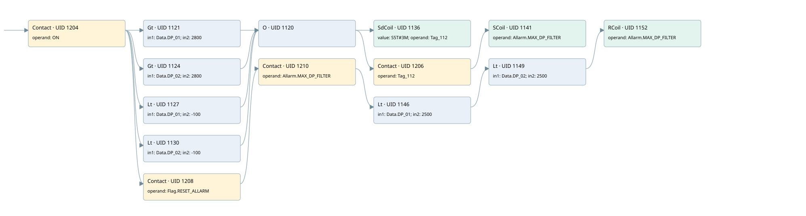

max filter depressure
allarms 3 · 검색 색인 순서 14 · 원본 내부 NID 추정 14
백업 PLF 원본의 3180219 바이트 위치에서 복원한 XML. 검색 문서 1992의 객체 키 161022007e6b000000000000와 연결했다. 이름 해석 20/20개. 남은 RefId는 상수 또는 미해석 참조다.
연결 구조 다시 그리기
원본 Part/PCon/Wire를 이용한 연결도다. TIA 화면의 래더 배치 또는 실행 결과를 재현한 그림은 아니다. 핀 연결은 아래 표와 원본 XML을 기준으로 읽는다. 노드 위에 마우스를 두면 피연산자 이름을 볼 수 있다.

접점·코일·블록과 피연산자
| Part UID | Gate | Negated 핀 | 연결 피연산자 |
|---|---|---|---|
| 1204 | Contact | operand = ON | |
| 1121 | Gt | in1 = Data.DP_01; in2 = 2800 | |
| 1124 | Gt | in1 = Data.DP_02; in2 = 2800 | |
| 1127 | Lt | in1 = Data.DP_01; in2 = -100 | |
| 1130 | Lt | in1 = Data.DP_02; in2 = -100 | |
| 1120 | O | ||
| 1136 | SdCoil | value = S5T#3M; operand = Tag_112 | |
| 1206 | Contact | operand = Tag_112 | |
| 1141 | SCoil | operand = Allarm.MAX_DP_FILTER | |
| 1208 | Contact | operand = Flag.RESET_ALLARM | |
| 1210 | Contact | operand = Allarm.MAX_DP_FILTER | |
| 1146 | Lt | in1 = Data.DP_01; in2 = 2500 | |
| 1149 | Lt | in1 = Data.DP_02; in2 = 2500 | |
| 1152 | RCoil | operand = Allarm.MAX_DP_FILTER |
접점 경로를 펼친 조건식
Contact·O/A·비교기의 원본 연결을 읽기 쉽게 펼친 보조 해석이다. POWER는 전원 레일 시작을 뜻한다. 호출 블록·에지·타이머의 내부 동작과 다중 쓰기 순서는 이 표로 실행 검증하지 않았다. 미해석 핀과 RefId는 원문 연결표에서 확인한다.
| UID | 동작 | 대상 | 원본 접점 경로 | 내용 |
|---|---|---|---|---|
| 1136 | SdCoil | Tag_112 | ((ON AND [Data.DP_01 > 2800]) OR (ON AND [Data.DP_02 > 2800]) OR (ON AND [Data.DP_01 < -100]) OR (ON AND [Data.DP_02 < -100])) | 시간 동작 SdCoil; 타이머 의미 추가 확인 / 시간 인자 S5T#3M |
| 1141 | SCoil | Allarm.MAX_DP_FILTER | (((ON AND [Data.DP_01 > 2800]) OR (ON AND [Data.DP_02 > 2800]) OR (ON AND [Data.DP_01 < -100]) OR (ON AND [Data.DP_02 < -100])) AND Tag_112) | 조건 성립 시 Set |
| 1152 | RCoil | Allarm.MAX_DP_FILTER | ((((ON AND Flag.RESET_ALLARM) AND Allarm.MAX_DP_FILTER) AND [Data.DP_01 < 2500]) AND [Data.DP_02 < 2500]) | 조건 성립 시 Reset |
원본 배선 연결
| Wire UID | 동일 Wire 연결 끝점 |
|---|---|
| 1212 | Powerrail {} ↔ Part 1204.in |
| 1173 | ORef 1153 (ON) ↔ Part 1204.operand |
| 1205 | Part 1204.out ↔ Part 1121.pre ↔ Part 1124.pre ↔ Part 1127.pre ↔ Part 1130.pre ↔ Part 1208.in |
| 1174 | ORef 1154 (Data.DP_01) ↔ Part 1121.in1 |
| 1175 | ORef 1155 (2800) ↔ Part 1121.in2 |
| 1176 | Part 1121.out ↔ Part 1120.in1 |
| 1177 | ORef 1156 (Data.DP_02) ↔ Part 1124.in1 |
| 1178 | ORef 1157 (2800) ↔ Part 1124.in2 |
| 1179 | Part 1124.out ↔ Part 1120.in2 |
| 1180 | ORef 1158 (Data.DP_01) ↔ Part 1127.in1 |
| 1181 | ORef 1159 (-100) ↔ Part 1127.in2 |
| 1182 | Part 1127.out ↔ Part 1120.in3 |
| 1183 | ORef 1160 (Data.DP_02) ↔ Part 1130.in1 |
| 1184 | ORef 1161 (-100) ↔ Part 1130.in2 |
| 1185 | Part 1130.out ↔ Part 1120.in4 |
| 1186 | Part 1120.out ↔ Part 1136.in ↔ Part 1206.in |
| 1187 | ORef 1162 (S5T#3M) ↔ Part 1136.value |
| 1188 | ORef 1163 (Tag_112) ↔ Part 1136.operand |
| 1189 | ORef 1164 (Tag_112) ↔ Part 1206.operand |
| 1207 | Part 1206.out ↔ Part 1141.in |
| 1191 | ORef 1165 (Allarm.MAX_DP_FILTER) ↔ Part 1141.operand |
| 1193 | ORef 1166 (Flag.RESET_ALLARM) ↔ Part 1208.operand |
| 1209 | Part 1208.out ↔ Part 1210.in |
| 1194 | ORef 1167 (Allarm.MAX_DP_FILTER) ↔ Part 1210.operand |
| 1211 | Part 1210.out ↔ Part 1146.pre |
| 1195 | ORef 1168 (Data.DP_01) ↔ Part 1146.in1 |
| 1196 | ORef 1169 (2500) ↔ Part 1146.in2 |
| 1197 | Part 1146.out ↔ Part 1149.pre |
| 1198 | ORef 1170 (Data.DP_02) ↔ Part 1149.in1 |
| 1199 | ORef 1171 (2500) ↔ Part 1149.in2 |
| 1200 | Part 1149.out ↔ Part 1152.in |
| 1202 | ORef 1172 (Allarm.MAX_DP_FILTER) ↔ Part 1152.operand |
식별자 해석 근거 20개
| ORef UID | RefId | 이름 | IdentXmlPart 파일 | 해석 방법 |
|---|---|---|---|---|
| 1153 | 1 | ON | 0686-IdentXmlPart.xml | UID/RID + search-text + NID agreement |
| 1154 | 114 | Data.DP_01 | 0684-IdentXmlPart.xml | UID/RID + search-text + NID agreement |
| 1155 | 139 | 2800 | 0683-IdentXmlPart.xml | literal candidate: UID/RID/NID + nearby named declarations + search-text agreement |
| 1156 | 116 | Data.DP_02 | 0684-IdentXmlPart.xml | UID/RID + search-text + NID agreement |
| 1157 | 139 | 2800 | 0683-IdentXmlPart.xml | literal candidate: UID/RID/NID + nearby named declarations + search-text agreement |
| 1158 | 114 | Data.DP_01 | 0684-IdentXmlPart.xml | UID/RID + search-text + NID agreement |
| 1159 | 140 | -100 | 0683-IdentXmlPart.xml | literal candidate: UID/RID/NID + nearby named declarations + search-text agreement |
| 1160 | 116 | Data.DP_02 | 0684-IdentXmlPart.xml | UID/RID + search-text + NID agreement |
| 1161 | 140 | -100 | 0683-IdentXmlPart.xml | literal candidate: UID/RID/NID + nearby named declarations + search-text agreement |
| 1163 | 118 | Tag_112 | 0686-IdentXmlPart.xml | UID/RID + search-text + NID agreement |
| 1162 | 96 | S5T#3M | 0683-IdentXmlPart.xml | literal candidate: UID/RID/NID + nearby named declarations + search-text agreement |
| 1164 | 118 | Tag_112 | 0686-IdentXmlPart.xml | UID/RID + search-text + NID agreement |
| 1165 | 119 | Allarm.MAX_DP_FILTER | 0684-IdentXmlPart.xml | UID/RID + search-text + NID agreement |
| 1166 | 24 | Flag.RESET_ALLARM | 0684-IdentXmlPart.xml | UID/RID + search-text + NID agreement |
| 1167 | 119 | Allarm.MAX_DP_FILTER | 0684-IdentXmlPart.xml | UID/RID + search-text + NID agreement |
| 1168 | 114 | Data.DP_01 | 0684-IdentXmlPart.xml | UID/RID + search-text + NID agreement |
| 1169 | 141 | 2500 | 0683-IdentXmlPart.xml | literal candidate: UID/RID/NID + nearby named declarations + search-text agreement |
| 1170 | 116 | Data.DP_02 | 0684-IdentXmlPart.xml | UID/RID + search-text + NID agreement |
| 1171 | 141 | 2500 | 0683-IdentXmlPart.xml | literal candidate: UID/RID/NID + nearby named declarations + search-text agreement |
| 1172 | 119 | Allarm.MAX_DP_FILTER | 0684-IdentXmlPart.xml | UID/RID + search-text + NID agreement |
검색 코드 보조 자료
참조 명칭을 찾기 위한 자료이며 실행 순서나 AND/OR 관계는 위 연결표로 확인한다.
"on" "data".dp_01 2800 "tag_112" s5t#3m "data".dp_02 2800 "data".dp_01 -100 "data".dp_02 -100 "flag".reset_allarm "allarm".max_dp_filter "data".dp_01 2500 "data".dp_02 2500 "allarm".max_dp_filter "tag_112" "allarm".max_dp_filter